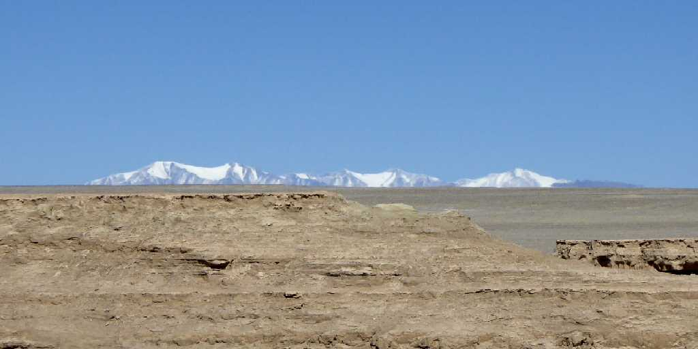
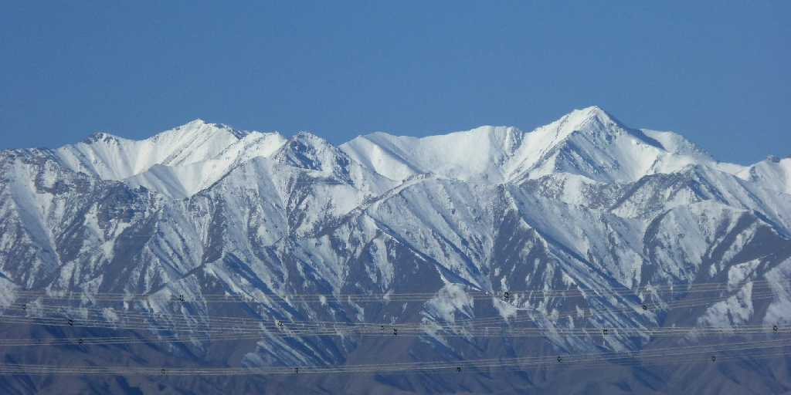
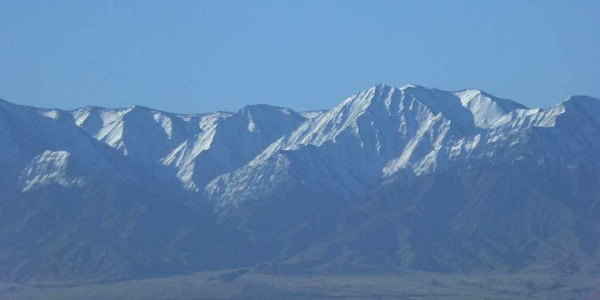
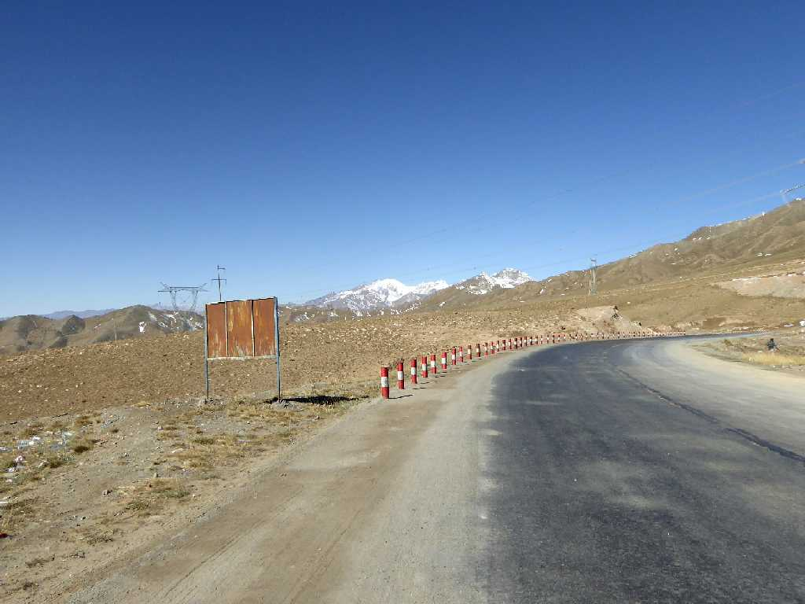
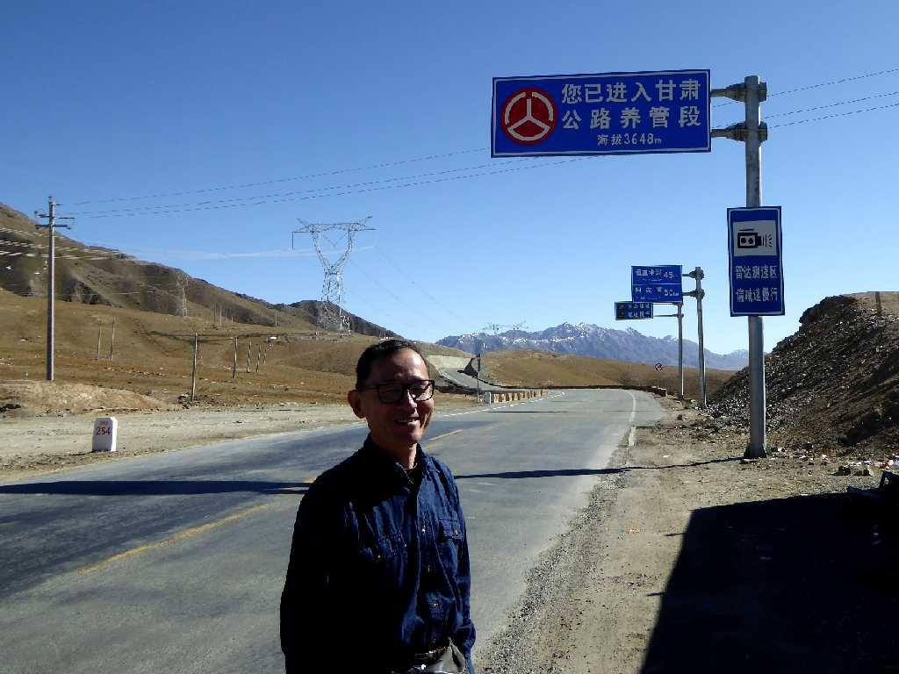

Altyn Tagh 阿爾金山脈
敦煌から西域南道を西に走り６,０００ｍを超える山々が連なる美しいアルチン山脈を越える

Altyn Tagh 阿爾金山脈

Altyn Tagh 阿爾金山脈

3,648m Dangjin Shankou Aksai 当金山垭口
アルチン山脈の３,６４８ｍの峠を越え新疆ウィグル自治区のタリム盆地に入るタクラマカン砂漠周遊の旅が始まる

September 14 2015 3,648m Dangjin Shankou Aksai 当金山垭口